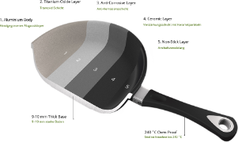
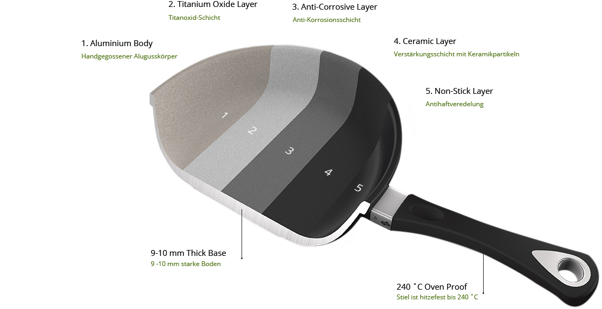

If you want to take care of health yours and yours close ones you should change your eating and cooking habits. First step to do it is to use fewer fats during preparing meals. In order to do that you need to use right cookware. It’s important because a high level of saturated fats in our meals causes many diseases like:
1. Elevated levels of cholesterol and triglycerides are caused by excess fats found in the blood cells. They are collected on the walls of the arteries and blood vessels which causes obstruction of the blood flow. As a result of the narrowing or blockage of the arteries and blood vessels may lead to a heart attack or stroke.
2. High blood pressure (the silent killer) caused by increased salt and fats in our meals
3. Diabetes is a disease caused by the inability of our body to produce sufficient amount of insulin hormone which is responsible for the entry of the sugar known as Glucose Cells into our body
4. Heart disease caused by elevated levels of cholesterol and triglycerides, high blood pressure and obesity

We need to give up from cooking with using ghee, butter, and frying oil because it is simply unhealthy. We also need to remember to use proper cooking utensils. Using Royal Diamond cookware you can always cook without fats. Changing the habits and Royal Diamond cookware will help protect us from high cholesterol and triglycerides and prevent heart disease and overweight. Besides improving the quality of your meals you will also save your time and money.
 